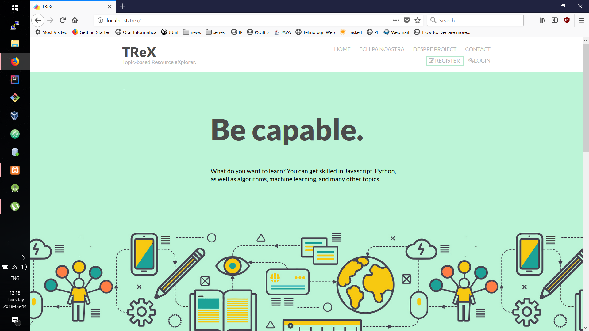
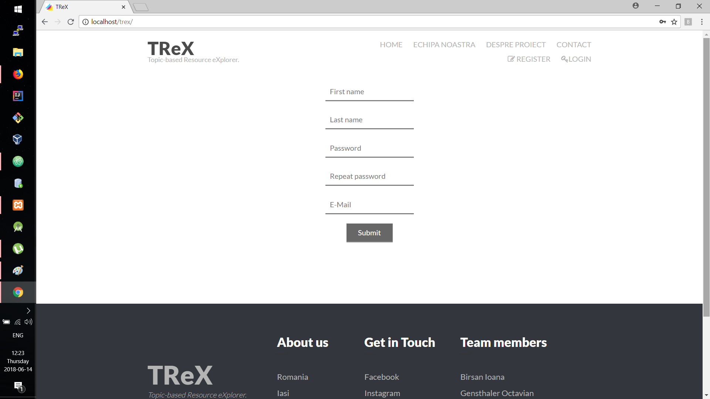
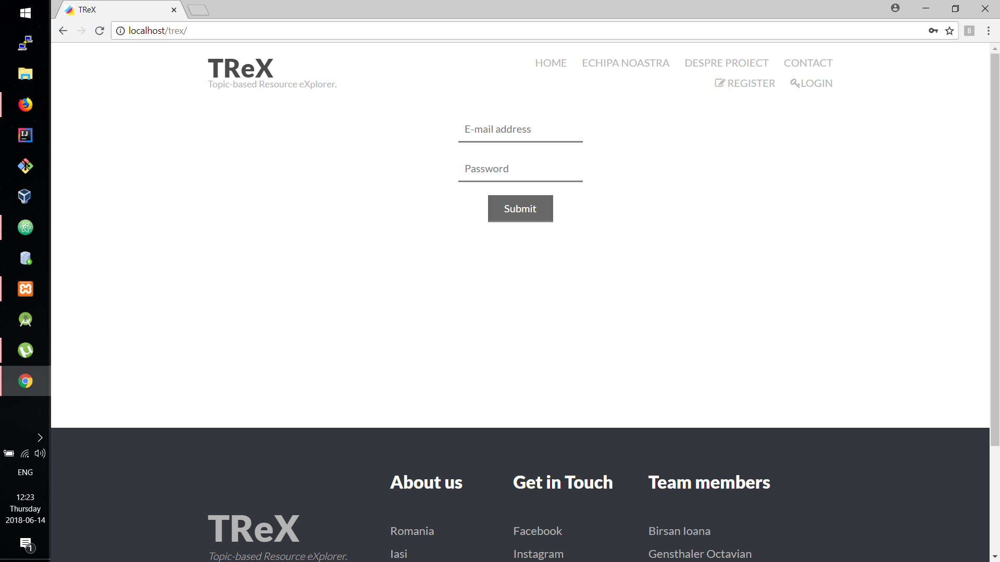
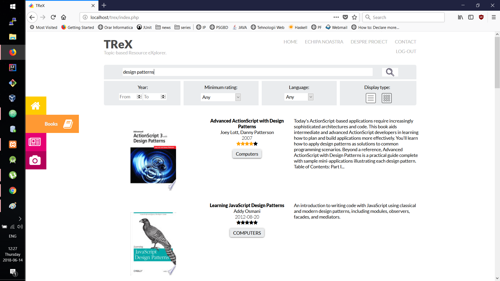
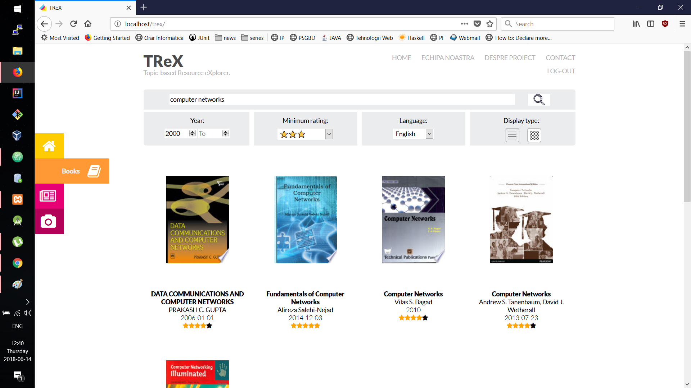
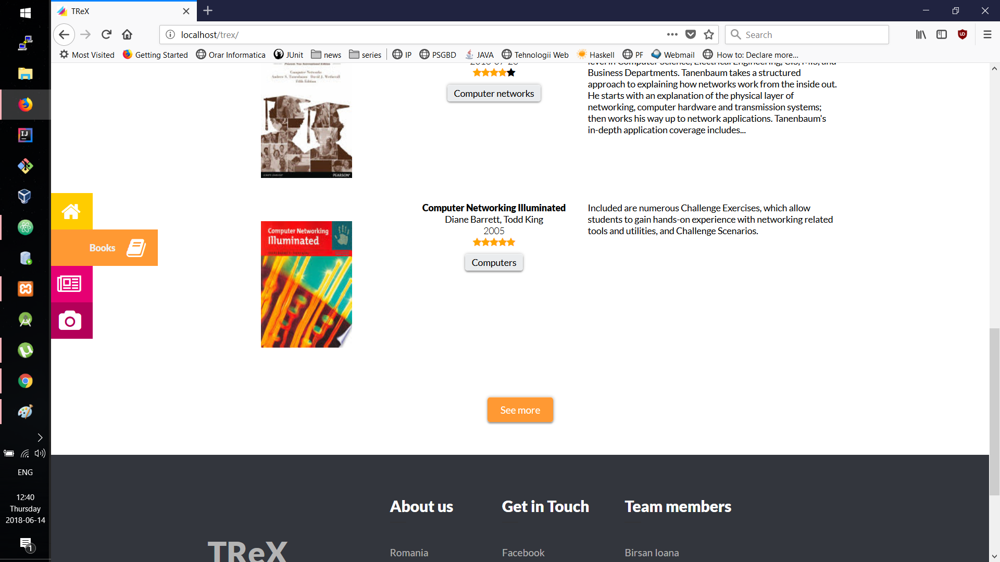
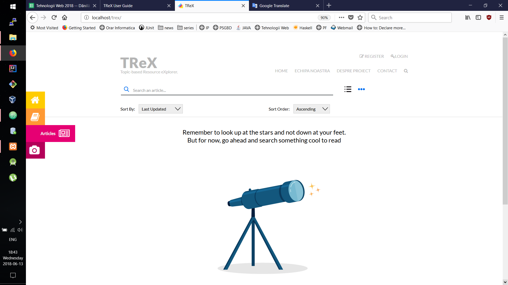
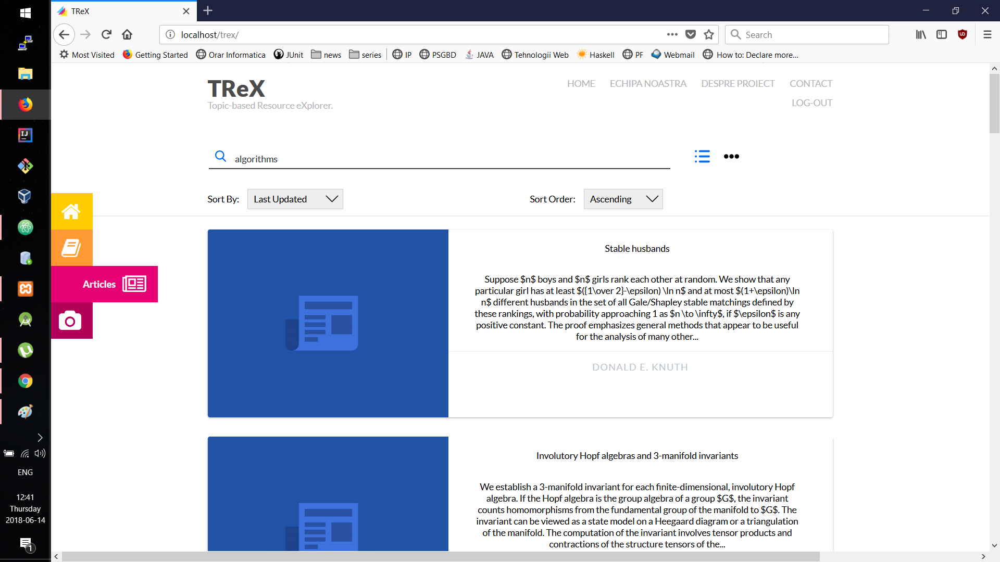

Community Draft
Registration is done by accessing the site at the address http://localhost/trex/ and clicking the Register button.
After completing the previous step, you will need to fill in the data required for your application registration, namely: your first name, last name, password, confirmation password and email address. Once you have entered all of this data, you must press the Submit button.
If you are already registered then you cand login in the application by accessing the site at the address http://localhost/trex/ and clicking the Login button.
After completing the previous step, you will need to fill in the data required for your application login, namely: your e-mail adress and password. Once you have entered all of this data, you must press the Submit button.
After logging in or registering, by default you will find yourself in the application presentation page. To view and search for the desired information about a particular resource, such as books, scientific articles, or videos, you will need to select the corresponding button.
Once you've selected the Books button, you can get information about the book you want by entering appropriate search terms and pressing the Enter key or by selecting and pressing the Search button. The displayed information can be visualized either in the list-view or in grid-view (by default, they are displayed in list-view). You can change it by selecting the corresponding button. In the grid-view format only basic information is available, such as: book cover, title, author / authors, year of publication, and rating. In the list format you can as well see the description of the book and the related tag, also by clicking over the description you will be able to listen to it.
You can filter books by entering an interval for the year of publication, by selecting the minimum rating (one to five stars) and the desired language (English, French, and Romanian).
If the search range for the publishing year you are entering is not valid, (i.e. from 2000 to 1200) then a pop-up with the following content will be displayed: From: 2000 must be smaller or equal to: 1200.
Also if what you are looking for is not found, an appropriate message will be displayed: There are no books that satisfy the search criteria.
By default, only the first 10 results are displayed. To get more results, select the See more button.
Once you've selected the Articles button, you will be welcomed by a motivating message.
You can obtain information about the article you want by entering appropriate search terms and pressing the Enter key or by selecting and pressing the Search button. The displayed information can be visualized either in the list-view or in grid-view (by default, they are displayed in grid-view). You can change it by selecting the corresponding button.
In the grid-view format only basic information is available: title and author / authors. In the list format you can as well see the description of the article, also by clicking over the description you will be redirected to the article in pdf format for more details. You can filter articles by selecting the sort options (Submitted Date, Most Relevance or Last Updated) and/or sort order (Descending or Ascending).
